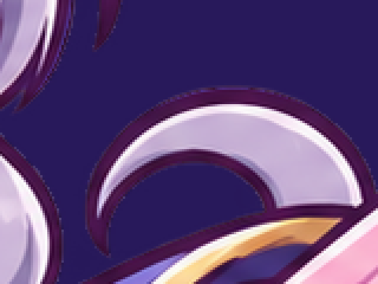
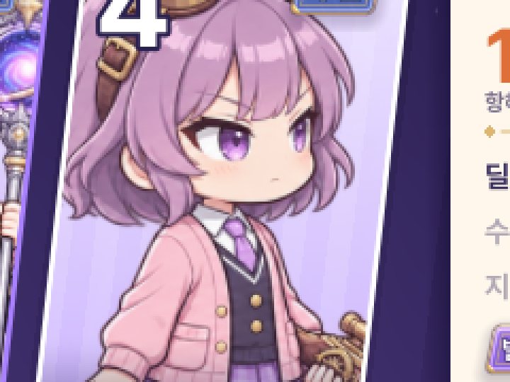
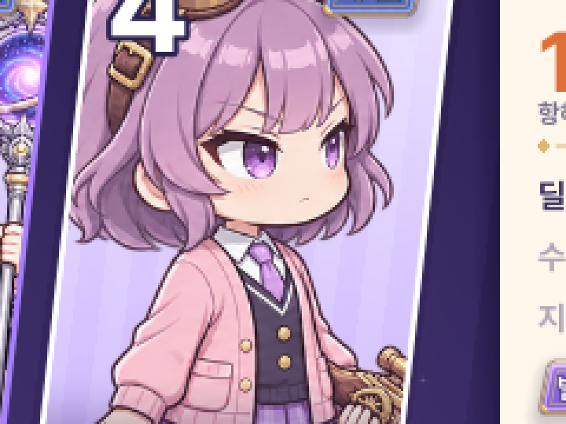
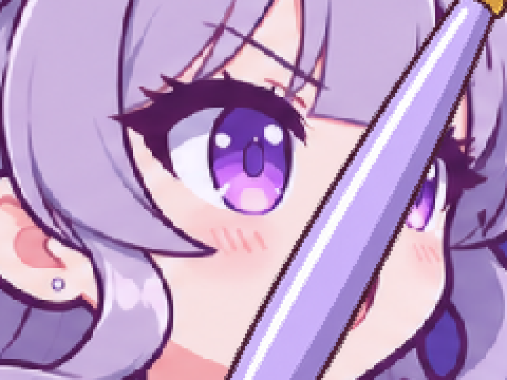
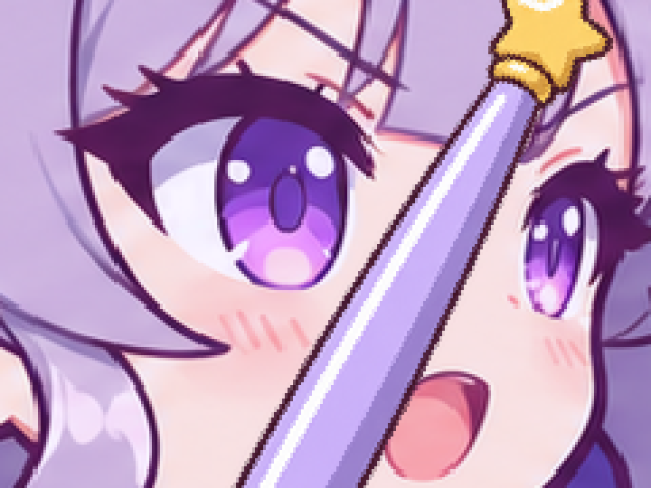
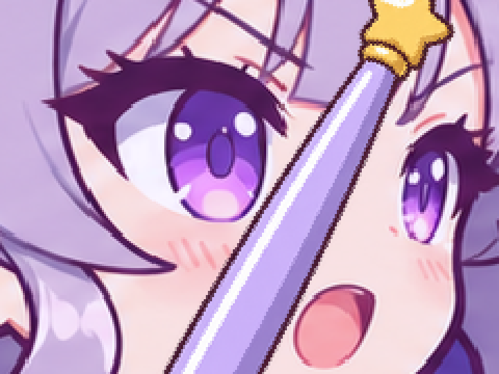
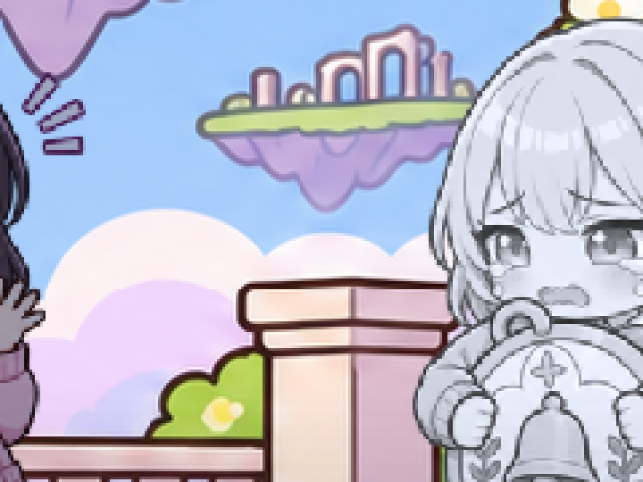

큰 그림 선명도 — 원인과 고친 뒤
같은 저장 · 같은 순간(움직임 · 반짝이를 멈춘 프레임)을 1280×720 · 1600×720에서 찍은 실제 게임 화면을 얼굴 둘레만 잘라 3배(가장 가까운 픽셀 그대로)로 키웠습니다. 그림체 · 그림 자체는 바꾸지 않았고, 원본보다 큰 그림을 새로 만들지도 않았습니다.
원인 요약 (화면 픽셀 / 원본 픽셀)
| 화면 | 원본 → 화면 (1280 · 1600 같음) | 원인 | 고침 |
|---|---|---|---|
| 궁극기 컷인 (전용 그림: 세레나 · 아르카) | 1672×941 → 979×551 (0.59배) | 밉맵 없이 0.59배로 줄여 그려 머리카락 · 윤곽선이 계단처럼 깨짐 + 배경 지운 판의 가장자리에 원래 배경색 테두리(후광) | 컷인 그림 가져오기 설정에 밉맵 켬, 13장 가장자리 다시 가름 |
| 궁극기 컷인 (SD: 루미 등) | 527×512 → 921×894 (1.75배 늘림) ⇒ 767×744 (1.20배) | 원본(767×744)을 512로 줄여 둔 것을 다시 1.75배 늘림 → 두 번 뽑혀 흐림 | 큰 화면용 1024 그림(cutin_tex) — 미리 손질, 없으면 그 프레임만 512 |
| 아이 상세 (전용 그림) | 1672×941 → 1187×668 (0.71배) | 그림 셰이더가 filter_linear(밉맵 없음)로 뽑음 · 아르카 그림 밉맵 없음 | cover_art 셰이더 filter_linear_mipmap + 가져오기 밉맵 |
| 아이 상세 (SD) | 368×512 → 640×890 (1.74배) ⇒ 551×766 (1.16배) | 512로 줄인 SD를 다시 늘림 | stand_big(원본 해상도, 최대 1024) |
| 편성 카드 | 368×512 → 224×312 (0.61배) | lineup_card · place_card 셰이더 filter_linear | filter_linear_mipmap |
| 소환 SS 공개 | 1672×941 → 1382×778 (0.83배) · 1728×973 (1.03배) | 문제 없음 (밉맵 · 가로 1600에서 거의 1:1) | 그대로 |
| 소환 SD 공개 · 이야기 무대 | 368×512 → 345×480 (0.94배) · 이야기 0.67배 | 문제 없음 | 그대로 |
창 배율: canvas_items + expand, 두 폭 모두 화면 배율 1.0 (가로만 넓어짐). 기본 필터 linear_mipmap(3). 수치: artifacts/feedback70/sharpness/measure_before.json · measure_after.json
1. 궁극기 컷인 — 세레나 (전용 그림)
아르카 (신화)
2. 궁극기 컷인 — 루미 (SD 공격 자세)
3. 컷인 가장자리 후광 (원본 판 4배 · 어두운 띠 위)
배경 지운 판의 알파가 윤곽선 바깥으로 2~4px 넉넉해 원래 배경색(풀빛 · 하늘빛)이 거의 불투명하게 남아 있었습니다. 원본 일러스트로 가장자리만 다시 갈라(배경색과 그림색 사이 비율로 알파 · 배경을 덜어 낸 색) 13장 모두 정리했습니다. 손질 전 판: design/backup/cutin_cut_v1/

4. 아이 상세 큰 그림
세레나 (전용 그림)


아르카 (신화)


루미 (SD)
5. 편성 라인업 카드


6. 소환 공개 (확인 · 바꾸지 않음)



7. 이야기 무대 SD (확인 · 바꾸지 않음)

용량 · 메모리
| 항목 | 전 | 후 |
|---|---|---|
| APK: 컷인 전용 판 13장 (무손실 WebP, 밉맵 포함) | 약 17.2MB | 약 24.9MB (+7.6MB) |
| VRAM: 전용 판 1장 (1672×941 RGBA) | 6.3MB | 8.4MB (+2.1MB, 컷인 · 상세에 떠 있는 동안만) |
| VRAM: 큰 SD 한 자세 (예: 루미 공격 767×744) | 512 그림 약 1.4MB | 약 3.0MB (+1.6MB, 연 아이 · 컷인 아이만 캐시) |